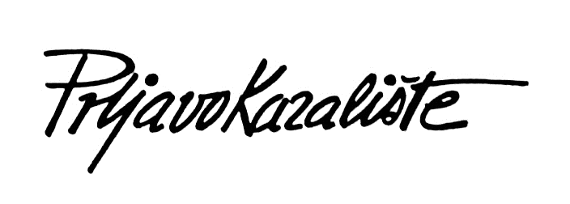

sastav
Sastav Prljavo kazalište osnovano je 1977. godine u Zagrebu u naselju Dubrava (radnička četvrt). Jasenko Houra dolazi u sastavu pod nazivom 'Ciferšlus', u kojemu tada sviraju Davorin Bogović (vokal) Zoran Cvetković – Zok (solo gitara), Ninoslav Hrastek – Nino (bas-gitara) i Tihomir Fileš (bubnjevi). Ubrzo nakon što im se priključio Houra, mijenjaju ime u Prljavo kazalište[1]. Sastav je dobio ime po jednoj epizodi vrlo popularnog stripa u ono vrijeme, Alan Ford[2](Epizoda BROADWAY/ Alan Ford Broj 99). Prvo ime o kojem su razmišljali članovi je bilo: Zarazne bolesti. U svom ranom djelovanju Prljavo kazalište bio je punk sastav, mada su težili da zvuče poput britanske rock skupine The Rolling Stones, čiji su bili veliki obožavatelji. Prvi nastup imali su 1978. godine na koncertu u organizaciji časopisa 'Polet', gdje su se pokazali kao žestoki punk sastav.

o bendu
Prljavo kazalište zagrebački je rock sastav, osnovan 1977. godine u predgrađu Zagreba, radničkoj Dubravi i spada u jednu od najpopularnijih grupa u Hrvatskoj, ali i u bivšoj Jugoslaviji.Izdavačka kuća Suzy objavljuje 1980. godine i njihov sljedeći album Crno-bijeli svijet. Producent na materijalu je također bio Piko Stančić, a album sadrži nekoliko velikih uspješnica koje sastav izvodi i danas, to su; "17 ti je godina tek", "Zagreb", "Moderna djevojka", "Crno bijeli svijet" i posljednja skladba na albumu "Mi plešemo". Album je zabilježio prodaju u preko 200.000 primjeraka i nagovijestio veliki potencijal sastava. Ipak, nakon što je objavljen album Crno-bijeli svijet, iz sastava radi razmirica odlazi Davorin Bogović.
postignuca
1978. grupa snima svoj prvi maxi singl Televizori/Majka/Moje djetinjstvo. Slijede prvi nastupi i formiranje hrvatske novovalne scene 1979. slijedi njihov diskografski projekt, album pod nazivom Prljavo Kazalište, koji je po mišljenju kritike najbolji debi album u povijesti domaćeg rocka 1980. izlazi najtiražniji album grupe Crno-bijeli svijet, prodan u 200.000 primjeraka u kojem se Jasenko Houra kao autor poigrava sa ska trendovima 1981. izlazi album Heroj ulice, možda najzreliji album grupe, u kojem je autor i tekstopisac Jasenko Houra napisao i otpjevao sve pjesme. Za razliku od prethodnog albuma koji je sniman u studijima CBS-a u Milanu, ovaj je projekt na najprofesionalniji način snimljen 1981. godine u "Ferger" studiju u Švedskoj 1983. nakon dvogodišnje autorske pauze, labelom CBS-a grupi izlazi album Korak od sna. Ovo je posljednji album koji je otpjevao Davorin Bogović 1985. album Zlatne godine. Ovo je period kada grupa izrasta u komercijalni (prodaja albuma, koncerti, turneje) i autorski fenomen hrvatske glazbene scene. Ujedno je ovo i prvi album koji je otpjevao Mladen Bodalec 1988. grupa održava trogodišnji tempo izlazaka albuma, te izdaje album Zaustavite Zemlju 1989. koncert održan 17. listopada na tadašnjem Trgu Republike (današnji Trg bana Jelačića) pod nazivom Voljenom gradu (ili Zabranjeni koncert) okupio je između 200 i 300 tisuća obožavatelja 1990. izlazi album Devedeseta s nekim od najvećih hitova u povijesti grupe kao što su "Pisma ljubavna", "Na Badnje veče" i "Oprostio mi bog, mogla bi i ti " 1993. Prljavo kazalište izdaje album Lupi petama,.... apsolutni best seller grupe, album poratne sjete i tuge za izgubljenim prijateljima, domovima, roditeljima 1995. koncertni put koji obuhvatio turneje po Australiji, Njemačkoj, Švicarskoj i Sloveniji završen je 27.12.1994., dotad neviđenim spektaklom, stotinjak metara od Zagrebačkog središnjeg trga, u uvjetima u kojima je gotovo nemoguće održati koncert. Božićni koncert organizirala je njemačka organizacija za ljudska prava Internationale Gesellschaft fur Menschenrechte sa sjedištem u Frankfurtu, a zabilježen je na audio i video materijalima 1996. izlazi album S vremena na vrijeme prodan u više od 50 000 primjeraka, a popratni promotivni koncert za doček 1998. godine održali su pred više od 120 000 ljudi 1997. u Koncertnoj dvorani Vatroslav Lisinski održavaju koncert povodom 20 godina od osnutka sastava, gdje nastupaju sa simfonijskim orkestrom i mnogim glazbenim gostima sa hrvatske scene. Među gostima je bio i bivši član grupe Zoran Zok Cvetković. Koncert je zabilježen na uživo CD-u pod nazivom XX godina. 1999. album Dani ponosa i slave koji je, kao i prethodni, prodan je zlatnoj tiraži 2003. album Radio Dubrava koji označava povratak čvrstom stilu i prepoznatljivom zvuku najvećeg hrvatskog rock sastava svih vremena 2005. izlazi studijski album grupe pod nazivom Moj dom je Hrvatska koji je i kod publike, ali i kod kritike izazvao nepodijeljene ovacije, a refreni istoimene pjesme s tog albuma korišteni su u reklamne svrhe za kampanje tijekom Svjetskog nogometnog prvenstva 2008. početkom studenog izlazi dvostruki studijski album pod nazivom Tajno ime 2009. početkom siječnja izlazi kompilacijski album pjesama uživo Best of - live. Iste godine obilježavaju tridesetu obljetnicu postojanja, veličanstvenim koncertom održanim 17. siječnja u zagrebačkoj Areni. Na koncertu su kao gosti nastupili i bivši članovi Davorin Bogović i Marijan Brkić. Snimke sa ovog koncerta objavio je Croatia Records na CD-u i DVD-u pod naslovom XXX godina
